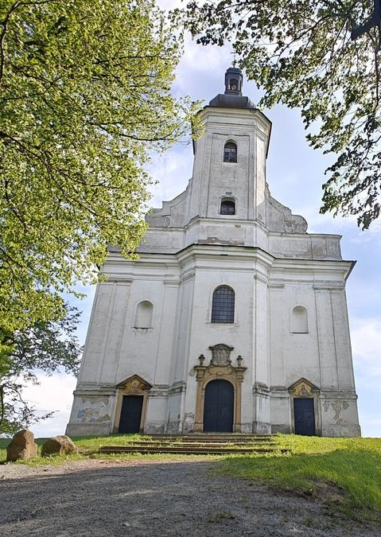

Úvod
Uhlířský vrch je výrazná dominanta města Bruntál a jedno z nejvýznamnějších poutních míst v okolí.
Historie
Vrch je pozůstatkem vyhaslé sopky a
na jeho vrcholu stojí
barokní poutní
Panny Marie Pomocné z 18. století.
Kontakt
Email: vilasek.ondrej@st.spsoa.cz
